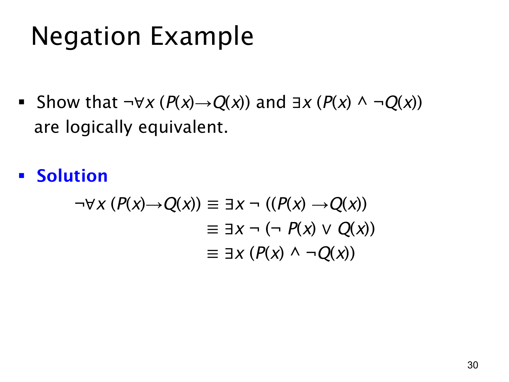

L1.2 · 第 30 页讲解原文
查看这一页课件

否定“所有 P 都满足 Q”
本页要证明
¬∀x(P(x)→Q(x))≡∃x(P(x)∧¬Q(x)).
先看自然语言：∀x(P(x)→Q(x)) 说“论域中所有满足 P 的对象也满足 Q”。要推翻这句话，必须找到一个确实满足 P、却不满足 Q 的对象。一个不满足 P 的对象不是反例，因为 P→Q 在前件为假时仍为真。
课件用三步等价变形把这个意思写严谨：
¬∀x(P(x)→Q(x))≡∃x¬(P(x)→Q(x))≡∃x¬(¬P(x)∨Q(x))≡∃x(P(x)∧¬Q(x)).
第一步用量词的德摩根律，把“并非每个”改成“存在一个不满足”。第二步把蕴含 P→Q 改写为 ¬P∨Q。第三步对析取式用德摩根律，再消去双重否定，得到 P∧¬Q。
因此，“不是所有 P 都是 Q”的形式化答案是“存在一个 P 不是 Q”，而不是“所有 P 都不是 Q”。例如“并非所有学生都及格”只需要至少一名学生未及格，不意味着全班都未及格。